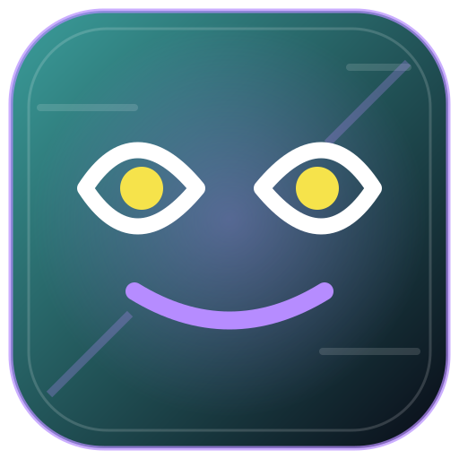

OTKAT DOWNLOAD PORTAL · ПРИКЛЮЧЕНИЕ · СТЕЛС · ТАКТИКА
Hide & Seek
Загрузки / Downloads
Русское название: Прятки
Отдельная страница версий для Hide & Seek. Ниже указаны доступные способы запуска и файлы, которые действительно подготовлены для скачивания.
BROWSER BUILD
Браузерная версия

Исходный пакет для браузера · ZIP
Скачать ZIP ↧HTML/JS-файлы прототипа. Это исходный пакет, а не EXE или APK. Для запуска смотри README внутри архива.
Godot source project · ZIP
Скачать Godot ZIP ↧Исходный проект Godot 4.7.2 для импорта в редактор. Это не готовый установщик.
Язык: название игры приведено на английском и русском. Интерфейс текущего прототипа — русский; полноценная английская локализация пока не реализована. ZIP не переключает язык игры.
TECHNICAL DETAILS
Характеристики
ЖанрПриключение · стелс · тактика
ФорматИнтерактивный 3D-прототип
УправлениеWASD / стрелки; мышь — камера; E — действие
ВерсияPrototype 0.1 · браузерная сборка
СохраненияЛокально в браузере на этом устройстве
ОнлайнСетевой мультиплеер и облачная синхронизация не реализованы
PLATFORM AVAILABILITY
Установочные версии
Не отмечаем платформу как доступную без реального проверенного установщика.
WindowsОтдельная установочная сборка пока не создана и не опубликована.НЕТ УСТАНОВЩИКА
AndroidОтдельная установочная сборка пока не создана и не опубликована.НЕТ УСТАНОВЩИКА
macOSОтдельная установочная сборка пока не создана и не опубликована.НЕТ УСТАНОВЩИКА
LinuxОтдельная установочная сборка пока не создана и не опубликована.НЕТ УСТАНОВЩИКА
Android TV / Google TVОтдельная установочная сборка пока не создана и не опубликована.НЕТ УСТАНОВЩИКА
iOS / iPadOSОтдельная установочная сборка пока не создана и не опубликована.НЕТ УСТАНОВЩИКА
Smart TVОтдельная установочная сборка пока не создана и не опубликована.НЕТ УСТАНОВЩИКА
Игровые консолиОтдельная установочная сборка пока не создана и не опубликована.НЕТ УСТАНОВЩИКА
Сейчас можно запустить браузерный прототип или скачать ZIP с его исходными файлами. Файлы EXE, APK, DMG, AppImage, iOS и консольные пакеты не созданы — ссылки на них не размещаем.